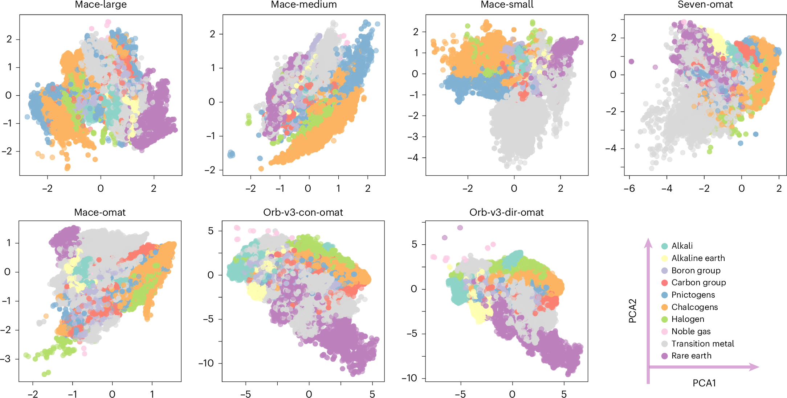
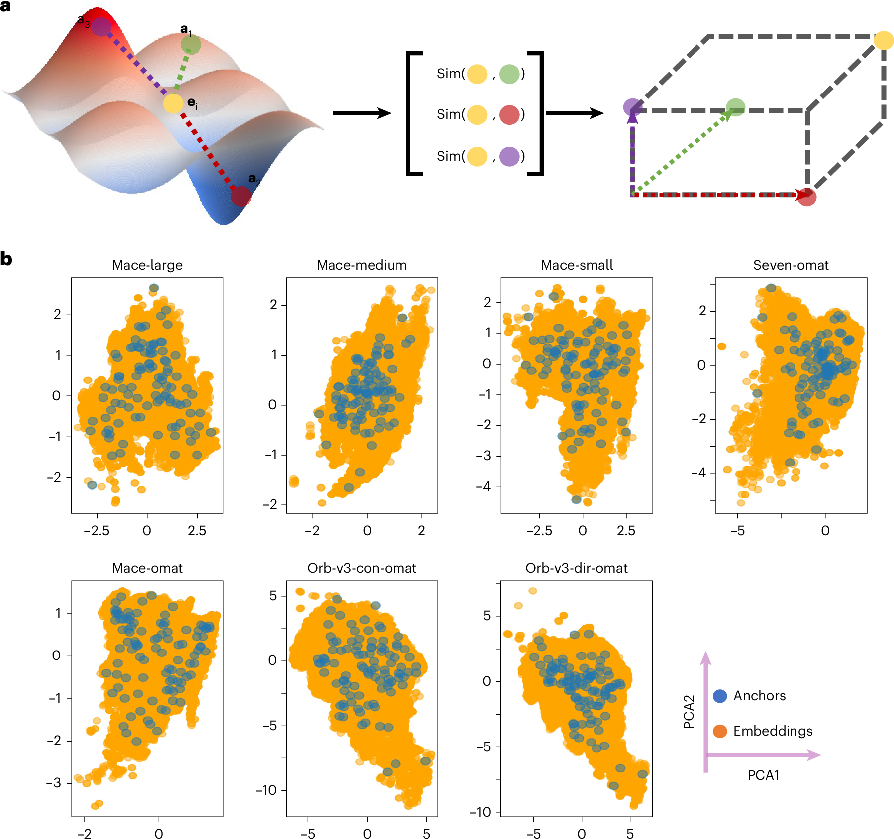
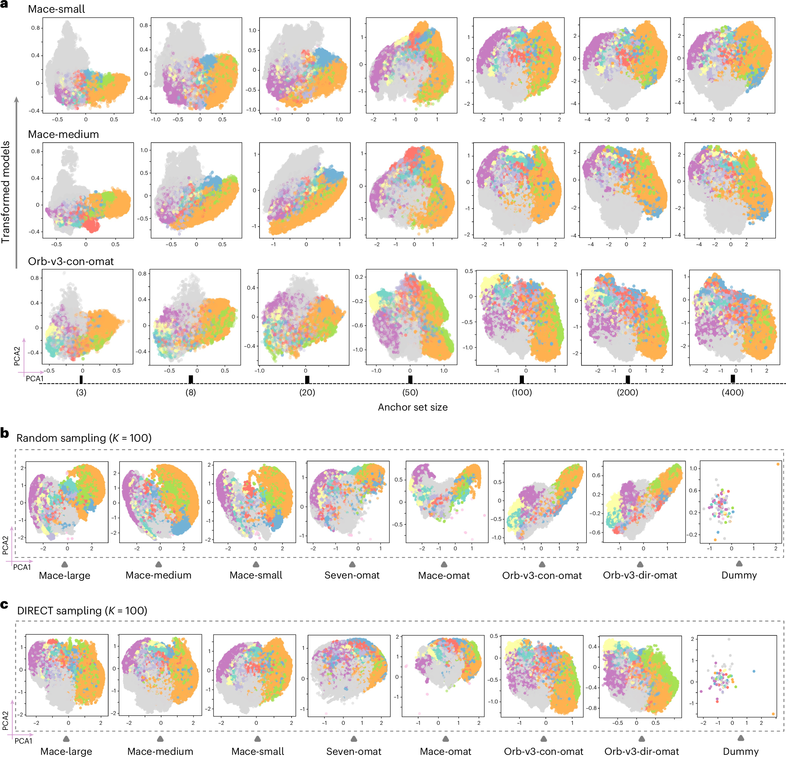
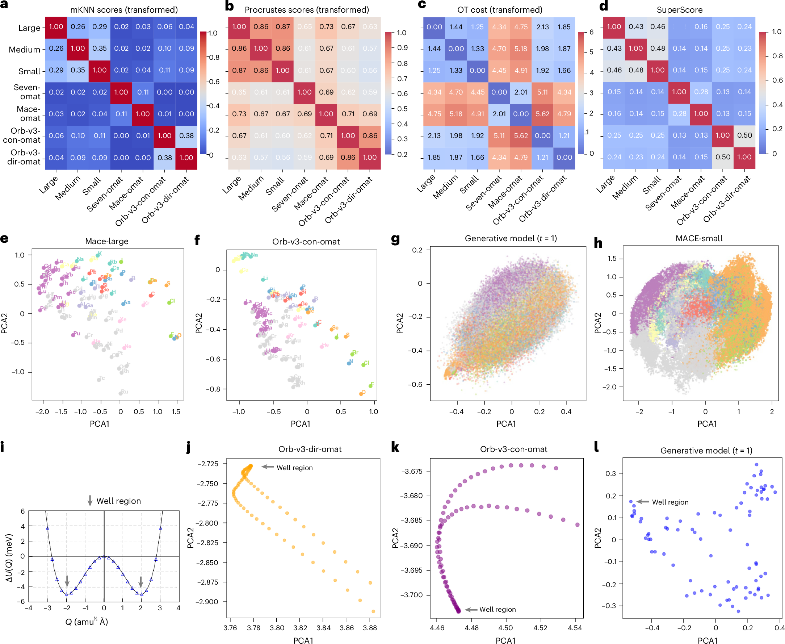
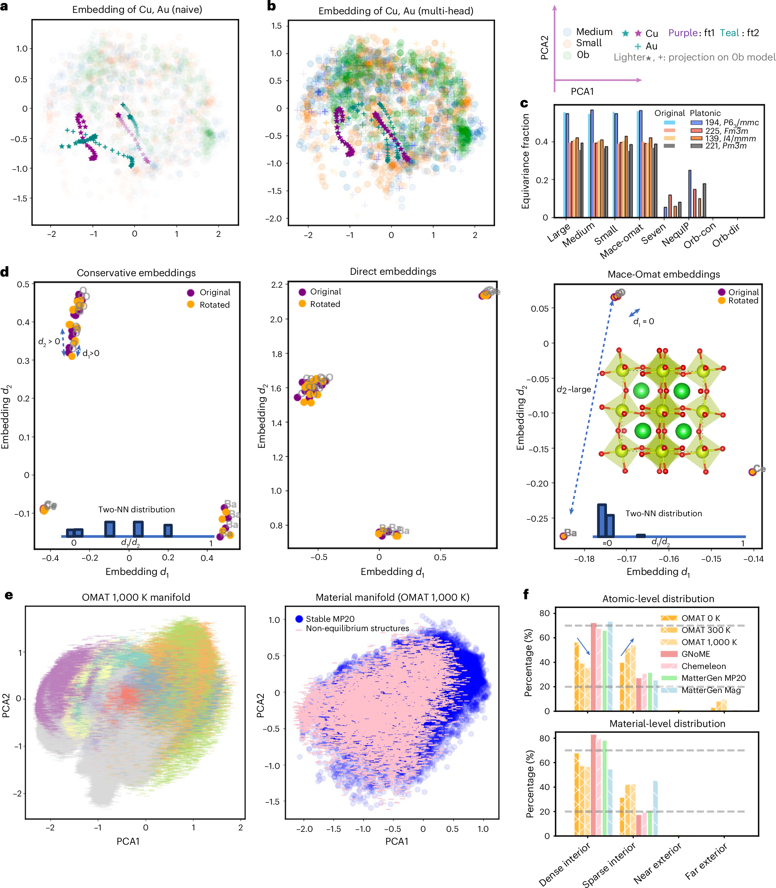

A foundation machine learning interatomic potential is usually judged by what it predicts. We ask whether the energies are good, whether the forces are stable, whether relaxation ends in a reasonable structure, and whether the model fails when the chemistry moves away from the training distribution. Those questions matter, but they do not tell us what the model has organized internally. Two models can reach similar errors while building very different internal pictures of chemical space. They can also fail for different reasons even when their benchmark scores look comparable.
The Nature Machine Intelligence paper by Li and Walsh is useful because it moves the discussion from output accuracy to representation. The central question is whether independently developed foundation MLIPs learn a shared geometry of atomic environments. In other words, do different models converge toward the same chemical map after they are trained on energies, forces, and related physical targets, or do they only produce similar predictions from unrelated internal coordinates.
I think this is a good paper because it treats interpretability as a materials problem rather than only a machine learning problem. A representation is not just a vector space hidden inside a model. It is a way of deciding which atomic environments are similar, which distortions are important, and which symmetries are worth preserving. For atomistic simulation, that is close to a chemical theory. It is not as explicit as an orbital picture or a charge density analysis, but it can still determine what the model notices and what it ignores.
This connects naturally to the problem I wrote about in Data and foundational MLIPs. Data defines the target that the model learns. This paper asks what happens after that learning has taken place. If large MLIPs are going to become reusable scientific infrastructure, then we need more than error bars. We need ways to compare their internal maps, diagnose their biases, and decide whether two pretrained models can be used together without treating one of them as a black box.
The problem is not only accuracy
The paper starts from a simple but important observation. Raw embeddings from different MLIPs are not directly comparable. The authors examine seven foundation MLIPs, including three MACE-MP-0 variants, two OMat24 based models, and two Orb-v3 models. They extract 282,847 atomic embeddings from 27,136 MP-20 structures. When these embeddings are projected with PCA, each model shows a different coordinate system and a different arrangement of element clusters.

This is not surprising by itself. Neural networks are allowed to choose arbitrary coordinates. A rotation, scaling, or change of basis inside a hidden layer does not necessarily change the final energy or force prediction. The problem is that this arbitrary coordinate freedom blocks comparison. If one model says two local environments are close in its embedding space and another model says they are far apart, we cannot tell whether that disagreement is physically meaningful or only a coordinate artifact.
This matters because foundation MLIPs are increasingly used as starting points rather than final models. They are fine tuned, compared, distilled, combined, and used to screen generated structures. In that setting, it is not enough to know that a model performs well on a benchmark. We also need to know whether its internal representation can be related to the representation of another model. Without that common reference frame, model reuse remains mostly empirical.
A coordinate system built from anchors
The method in the paper is conceptually clean. Instead of trying to force every model into the same raw latent coordinates, the authors define each atomic environment by its similarity to a shared set of anchor environments. For each model, an embedding is transformed into a vector of cosine similarities to these anchors. The new coordinates are therefore relative rather than absolute. Each axis asks how similar the current environment is to one chemically meaningful reference point.

This is appealing because it resembles how chemical intuition often works. We rarely understand a new local environment in isolation. We understand it by comparison to reference cases. A tetrahedral site is compared to other tetrahedral sites. A strained bond is compared to its relaxed analogue. A high pressure environment is compared to a lower pressure environment with similar composition. The anchor method turns that habit into a numerical coordinate system.
The choice of anchors is important. The authors compare random anchor selection with DIRECT sampling, which is designed to cover the latent manifold more uniformly. DIRECT sampled anchors produce a more stable and chemically organized shared space. The transformed embeddings become increasingly consistent as the number of anchors grows, and the representation stabilizes around K = 100. A very small number of anchors captures broad chemical organization, while denser anchors begin to resolve finer structure.

The important point is that the transformation is model agnostic. It does not require changing the architecture or retraining the potential. It also does not require that the original embeddings have the same dimension. MACE embeddings and Orb embeddings can be mapped into the same anchor defined space because the new representation depends only on relative similarity to shared environments. That makes the method practical for comparing models that were never designed to communicate.
Global convergence is not local agreement
The strongest result is not that all models become identical. They do not. The stronger result is that their disagreements become organized. After the anchor transformation, the models show substantial global alignment. Chemical groups cluster coherently, and periodic trends appear in similar ways across models. MACE variants show strong global similarity by Procrustes analysis, with scores above 0.86. That means the large scale geometry of chemical space is similar after the arbitrary coordinate choices are removed.
At the same time, the local neighborhoods remain different. The mutual nearest neighbor score stays below 0.38 across model pairs, and the non-equivariant Orb models show near zero local agreement with equivariant models. That distinction is important. A model can learn the broad organization of chemistry and still disagree about which local environments are closest to one another. Those local differences are where many practical failures live, especially in defects, interfaces, transition paths, and distorted structures.

This is the part of the paper that I find most useful for thinking about MLIPs. Foundation models may converge toward a shared chemical manifold, but convergence is not the same as interchangeability. A global map can look right while the local metric still changes from model to model. For molecular dynamics and structure relaxation, the local metric matters because it controls how the model responds to small distortions. A wrong local neighborhood can become a wrong force direction, even if the element level organization looks chemically reasonable.
The optimal transport analysis also separates effects from training data and architecture. Models trained on OMat24 separate from the MACE-MP-0 family, while the non-equivariant Orb models separate even more strongly from the equivariant models. This is exactly the kind of information that standard benchmark tables tend to flatten. A benchmark can tell us which model wins on a fixed test set. A representation comparison can tell us why two models may disagree when they are moved into a new regime.
Physics supervision is the important control
The paper becomes more convincing when the authors test whether the shared structure comes from physics or only from seeing the same kinds of crystal structures. They compare foundation MLIP embeddings with a generative model trained on similar structural and compositional data but without energy or force supervision. The generative representation does not show the same tight periodic chemical organization. A dummy MACE model with random weights also fails to produce meaningful chemical structure.
This control matters. It suggests that the platonic organization is not just a statistical echo of the training set. It emerges because the model is trained to reproduce physical quantities. Energy and force supervision force the model to learn which distinctions affect the potential energy surface. Chemical periodicity is not inserted as a table of elements. It appears because atoms with related valence behavior tend to produce related energetic responses across many local environments.
That is a subtle but important claim. It means the representation is not only a learned compression of structures. It is a learned compression of how structures respond energetically. In materials discovery, this distinction is essential. We do not care only whether two structures look similar. We care whether changes in one structure imply similar changes in energy, force, stability, or reactivity. A representation trained on physical response should be more useful than one trained only to reconstruct structural data.
This is also where I see a connection to electronic structure descriptors. In my own work, quantities such as ELF are useful because they give a physically grounded representation of bonding, not just a geometric description of atoms. The Li and Walsh paper is operating at a different level, but the principle is similar. A useful descriptor should preserve the degrees of freedom that control the property of interest. For an MLIP, those degrees of freedom are encoded implicitly in the potential energy surface.
The useful outcome is diagnostics
The practical value of the paper is that the platonic space can be used as a diagnostic framework. One example is fine tuning. Naive fine tuning on Cu dimers can damage the representation of unseen Au environments, a form of catastrophic forgetting. A multi-head fine tuning strategy preserves the Au embeddings more effectively. This turns representation drift into something visible, which is valuable because fine tuning failures are often discovered only after downstream simulations behave strangely.

A second diagnostic is symmetry. Equivariant models preserve symmetry related environments more reliably, while non-equivariant Orb models fail to collapse equivalent atoms in the same way. The paper shows a rotational sensitivity test on BaCeO3 where the non-equivariant embeddings diverge under rotation. This is not just an aesthetic issue in representation space. The symmetry violation propagates into physical predictions, including qualitatively wrong phonon dispersions.
A third diagnostic is structural typicality. The authors use distances from the stable material manifold as a ground truth free measure of whether a structure is typical or atypical. Relaxed MP-20 structures occupy dense regions. Non-equilibrium OMat structures at 300 K and 1000 K move outward. Generated structures from models such as GNoME, MatterGen, and Chemeleon mostly occupy dense interior regions, while magnetic MatterGen outputs shift toward sparser regions. The method is not a proof that a structure is stable, but it gives a fast geometric warning signal.
I like this framing because it treats representation space as a microscope for model behavior. The purpose is not to claim that the embedding is reality. The purpose is to ask whether the embedding preserves the physical relationships that matter for simulation. When it does not, the failure can be found before running a long molecular dynamics trajectory or trusting a generated structure.
What this changes for how I think about MLIPs
The main lesson is that foundation MLIPs should be evaluated as scientific instruments, not only as predictors. An instrument needs calibration. It needs known failure tests. It needs a way to compare measurements from different devices. The platonic representation gives one possible calibration space. It does not replace force errors, phonon tests, defect benchmarks, or relaxation success rates, but it adds a missing layer between model architecture and model output.
It also suggests that model interoperability may become a real design target. If two models can be mapped into a shared representation, then it becomes easier to compare them, stitch parts of their embeddings, or use one model as a reference for diagnosing another. The paper shows early examples of embedding arithmetic for materials, polymorphs, and reactions. The reaction examples are especially interesting because they suggest that models trained on different datasets can sometimes be combined algebraically in the shared space.
I would not overstate that result yet. The polymorph example shows a clear limitation. Material identity is preserved well, but subtle polymorphic differences are smoothed out when embeddings are pooled into a structure level vector. That is exactly where many materials problems are hardest. The difference between two phases can be a small distortion, a different stacking sequence, or a local ordering pattern. If a pooled representation washes that out, then the arithmetic is useful only at the level of broad identity, not detailed phase competition.
Still, the direction is important. If foundation MLIPs are going to be used across chemistry, then the field needs tools for asking whether two models know the same chemistry in the same way. A shared representation does not make all models equivalent. It gives us a language for measuring where they agree, where they diverge, and whether the divergence is caused by training data, architecture, symmetry handling, or missing physics.
A few cautions
The paper is careful about one major limitation. A rigorous mathematical link between manifold geometry and physical observables has not been established. That means distance in platonic space should not be treated as a direct substitute for an energy error or a stability metric. It is a diagnostic, not a ground truth.
There is also a question about resolution. The shared manifold preserves periodic trends and broad chemical organization very well, but local neighborhoods remain model dependent. For high value scientific use, the local differences may matter more than the global agreement. A future version of this framework may need task dependent anchors, local environment specific metrics, or separate manifolds for special regimes such as surfaces, defects, high pressure phases, liquids, and reactive transition states.
The final caution is that representation compatibility should not become a way to hide data problems. If models are trained on inconsistent reference energies, selective corrections, or uneven chemical coverage, a shared coordinate system may reveal those issues but cannot remove them. This links back to the data problem. A platonic representation is only as physical as the targets that shaped it.
What I take from the paper
The strongest contribution of this paper is that it makes model comparison more chemical. It shows that foundation MLIPs can share a global latent geometry when trained on physical targets, but it also shows that local disagreements and architectural biases remain. That combination feels right. Chemistry has broad regularities, but the details matter. A good foundation model should capture both.
For materials discovery, the most useful version of this idea is not only a prettier embedding plot. It is a workflow where representation geometry is used to decide when a model is operating in a familiar regime, when a generated structure is outside the learned manifold, when fine tuning has damaged old knowledge, and when symmetry or architecture creates a physical failure. That is the kind of interpretability that can change how models are used in practice.
The paper does not make foundation MLIPs automatically trustworthy. It gives us a better way to ask what trust should mean. For a field that increasingly depends on learned potentials to explore structures that are expensive to validate directly, that is a meaningful step.
References
- Li Z and Walsh A. Platonic representation of foundation machine learning interatomic potentials. Nature Machine Intelligence. 2026. doi 10.1038/s42256-026-01235-7.
- Huh M, Cheung B, Wang T and Isola P. Position paper on the platonic representation hypothesis. International Conference on Machine Learning. 2024.
- Batatia I and coauthors. A foundation model for atomistic materials chemistry. Journal of Chemical Physics. 2025.
- Riebesell J. A framework to evaluate machine learning crystal stability predictions. Nature Machine Intelligence. 2025.